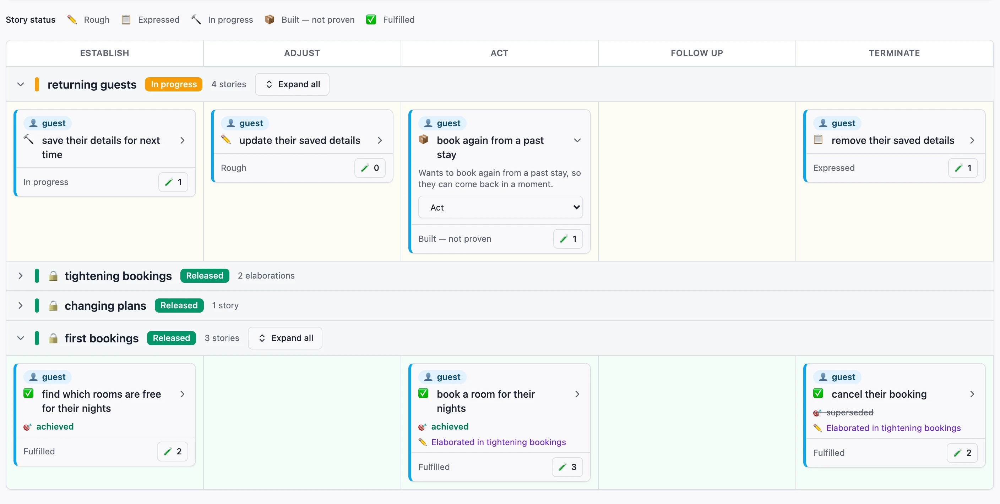
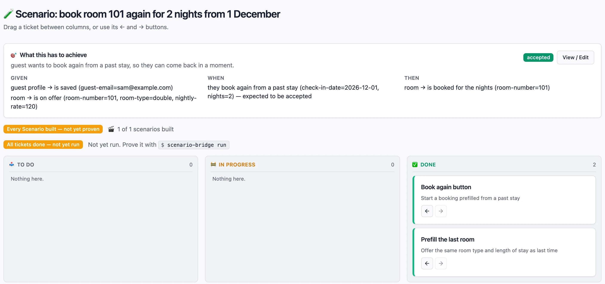

See what’s proven, what’s being built, and why.
Barnspec maps your software by the needs of the people it serves. Build it a slice at a time, and watch each piece turn green only when the real software proves it.

Stories, not tickets.
Every piece of work starts as a sentence anyone can check: who needs something, what they want to do, and what they get from it. Barnspec’s wizard asks you to complete each sentence, so no technical knowledge is needed.
The map then lays stories out along the person’s journey, from getting started to finishing up, so gaps are obvious at a glance.
A guest wants to book again from a past stay, so they can come back in a moment.
- book room 101 again for 2 nights from 1 Decemberbuilt, not proven
One word, one meaning, for everyone.
Every person, thing and action in a story is given a meaning in plain words the first time it’s used. From then on, every story and every example uses the same word for the same thing.
Together those words are the business’s own language, kept as a glossary beside the map. Stakeholders, developers and newcomers all read the same meanings, so nobody forgets what “booking” meant, and nobody gets lost coming back to it a year later.
The examples that prove each story are built from the same words, so the language and the software can’t quietly drift apart.
- guestwho
- choosing and securing somewhere to stay
- bookingthing
- a guest’s hold on a room for a run of nights
- is confirmed: holds the room for the guest on these nights
- has been cancelled: no longer holds the room
- roomthing
- a room the hotel lets to guests
- is out of service: the hotel is not letting it to guests for now
Written once, then used word for word in every story, example and test.
A board that can’t be gamed.
Each story is pinned down by concrete examples. Tickets track the work, but moving a ticket to Done never makes anything green. Only a passing run against the real software does, and a later failure turns it red again.
So when the map says a story is fulfilled, it is. Nobody has to take anyone’s word for it.

One slice at a time.
Work happens in slices: small, whole pieces of value, built from end to end. There is the slice being built now and the ones already released. There is no backlog, and nothing to estimate.
When every story in the slice is proven, release it and start the next. Released slices fold away but stay proven, and they keep being re-checked while new work is built.
- first bookings
- changing plans
- tightening bookings
- returning guests
Change your mind without losing the thread.
Learned something after release? Change the story in the current slice. Barnspec records what changed beside the original, so a year later anyone can see what you did first, what you learned and what you did about it.
Released work stays proven while the change is built, so nothing is broken along the way.
A guest wants to cancel their booking, so they are not held to a stay they will not take.
- first bookingsCancelling frees the room. Cancelling twice is refused.
- tightening bookingsChanged: cancelling twice does no harm. The original is kept beside it.
Find out if it mattered.
A story working proves the person can do the thing. It doesn’t prove they got what they wanted. So when the next slice is released, Barnspec asks about the ones before it.
Only the people the work was for, or someone speaking for them, can say it succeeded. And “it works, but it didn’t help” is an answer you can give without penalty, which is why people give it.
…so they have somewhere to stay. Did they?
“I booked without phoning the front desk.”
Sam, a guest
One record, read by everyone.
Stakeholders
Read plain sentences about real people, see exactly what’s proven, and say whether it delivered what they hoped.
Developers
Get concrete examples that run as tests against the real code, and a brief that never leaves the board.
Newcomers
Generated story pages, a glossary of the business’s own words, and a map that links them all together.
How it works underneath.
Everything above, in more detail, for when you want it.
The map’s five columnsWhere a story sits in the person’s journey
Columns are the same for every part of the business, so maps line up side by side:
- Establish: gaining what’s needed to take part, such as signing up or registering.
- Adjust: changing something that already exists, such as editing details.
- Act: the exchange the business exists for, such as paying or booking.
- Follow up: settling what already happened, such as chasing, disputing or asking for help.
- Terminate: ending something for good, such as cancelling or closing.
Stories that aren’t about a journey, such as reporting or compliance, live in a permanent Unassigned column. It’s a home, not a queue.
How a story’s status is decidedRough, expressed, in progress, built, fulfilled
Each story is pinned down by scenarios: concrete Given / When / Then examples. A scenario’s colour is worked out, never set:
- Yellow while any ticket for it is still open.
- Red once every ticket is done, until a run against the real software passes, or after a run fails.
- Green only after a passing run. There is no button to mark it done.
A story’s status is rolled up from its scenarios. Adding new work to a green scenario sends it back to yellow, because the old evidence predates the new work.
From examples to running testsHow a scenario is checked against real code
Barnspec generates a small adapter class for each fact, action and role your scenarios use. You fill them in with calls into your application, and every scenario then runs on its own, from a clean start, as an ordinary test. Every run is recorded, pass or fail, and that record is what colours the map.
$ vendor/bin/port-generator generate reservations
$ vendor/bin/scenario-bridge run-all reservations --released # keep released slices provenChanging a released storyElaborations: added, amended and retired scenarios
Once a slice is released, its stories’ scenarios no longer change directly. A change is an elaboration in the current slice: new wording, plus scenarios added, amended or retired. When that slice is released, the elaboration is merged in, and what it replaced is kept as a record. Until then, the released behaviour keeps being proven.
Recording whether it matteredImpact: evaluating, achieved, none, superseded
Each released story gets an Impact: dated observations, each saying who made it. Releasing a slice asks about earlier slices’ unsettled rewards, but never blocks the release. Achieved settles only on the word of the people the story was for, or someone speaking for them. Impact never changes a story’s colour: green and “none” is an honest, useful combination.
How the glossary is builtThe ubiquitous language, one glossary per area of business
Domain-Driven Design calls a business’s shared vocabulary its ubiquitous language. Barnspec builds it from the stories themselves: each role, subject, fact and action keeps the meaning it was given when it was created, and the glossary gathers them for each area of business. Who takes part, what they deal with and what can be true of it, and everything they can do.
Nothing is summarised or made up. It’s exactly what was written, sorted so any word can be found at a glance. Open it from the Glossary tab beside the map, or write it out next to the story pages, where the map links each area of business to its glossary.
$ vendor/bin/barnspec glossary --output-dir=docs/glossary # a page per area of business, plus an indexThe same words can be exported to Barncept as a graph of concepts.
The command lineEverything the browser does, and more, from a terminal
An interactive wizard captures stories, and every step also has a scripted form for CI and AI agents.
$ vendor/bin/barnspec draft # capture a rough story
$ vendor/bin/barnspec review # turn it into a real one
$ vendor/bin/barnspec refine # add its scenarios
$ vendor/bin/barnspec map --output-dir=docs/map # an HTML story mapEverything is stored as readable JSON in .barnspec/, committed alongside your code.
Open the map on your own project.
Barnspec needs PHP 8.5 and Composer. Install it into your project, then run one command and the story map opens in your browser.
$ vendor/bin/barnspec guiInstallationNot on Packagist yet: install from a BarnSuite checkout
Add a path repository for each package, then require Barnspec, its command line and its browser app.
{
"repositories": [
{ "type": "path", "url": "/path/to/barnsuite/application/barnspec" },
{ "type": "path", "url": "/path/to/barnsuite/package/filesystem" },
{ "type": "path", "url": "/path/to/barnsuite/package/typed-input" },
{ "type": "path", "url": "/path/to/barnsuite/package/menu" },
{ "type": "path", "url": "/path/to/barnsuite/cli/barnspec-cli" },
{ "type": "path", "url": "/path/to/barnsuite/gui/barnspec-gui" }
]
}$ composer require --dev rmb32/barnspec rmb32/barnspec-cli rmb32/barnspec-gui